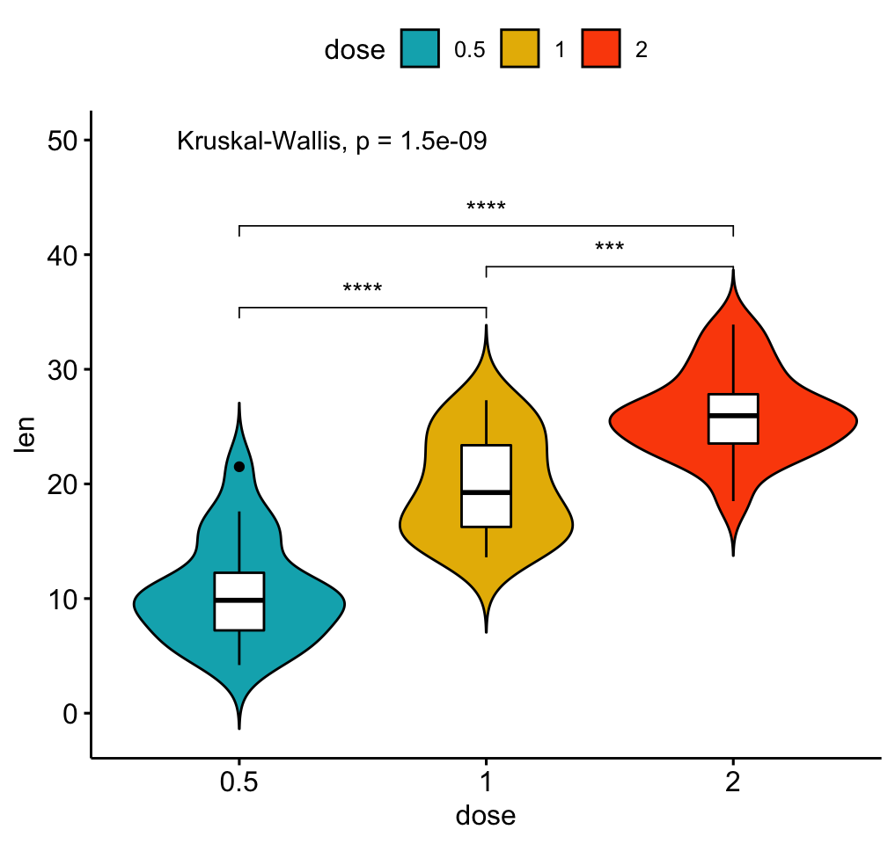
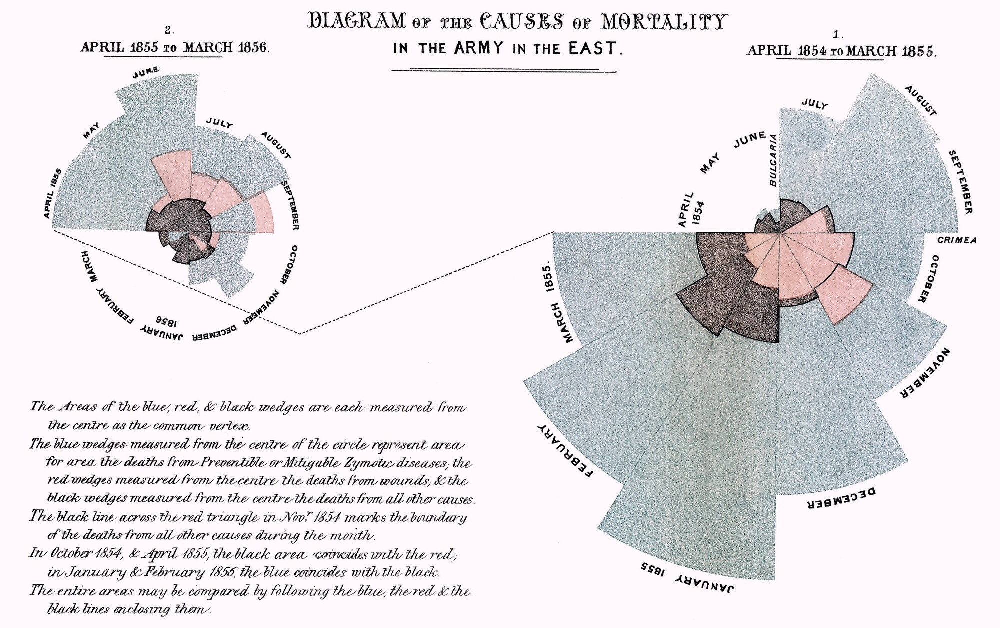
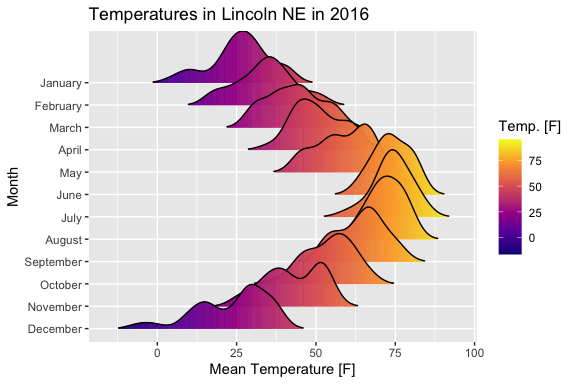

1 Visualisoinnin alkeet
Visualisoinnilla tarkoitetaan tilastodatan esittämistä visuaalisin menetelmin, eli kuvioilla, käppyröillä ja käyrillä. Visualisoinnin päätehtävänä on tehdä monimutkaisesta tiedosta helposti kulutettavaa, ymmärrettävää ja jäsennettävää. Vanha sanonta pitää paikkaansa: kuva kertoo enemmän kuin tuhat sanaa - mutta lisäisin siihen, “jos kuva on selkeä, ytimekäs ja saavutettava”.
Kuvan tekeminen on suhteellisen yksinkertaista. Hyvän kuvan tekeminen vaatii harjoittelua ja opiskelua! Sinun ei tarvitse olla viestinnän erityisosaaja tai omata mitään erityistä “visuaalista pelisilmää”, mutta ohjeita kannattaa seurata ja kollegoilta kannattaa pyytää palautetta. Hyödynnä myös työssäsi viestinnän ammattilaisten osaamista ja ohjeita - heillä on tarvittava erityisosaaminen!
Jos tiedon visualisointi kiinnostaa enemmän, suosittelen tekemään ilmaisen verkkokoulutuksen Tiedon visualisointi valtionhallinnon eOppiva-ympäristössä (vaatii Virtu-kirjautumisen).
Jos sinua kiinnostaa grafiikan teko Excelissä, lue Luku 18.
1.1 Graafinen selkeys
Yhden kuvan tulisi kertoa yksi tarina. Kvantitatiivisissa visualisoinneissa tämä tarkoittaa, että kuvan tulisi kertoa jotain yhdestä asiasta. Tämä asia voi olla muuttujan jakauma, kahden muuttujan välinen suhde, ääripääarvojen esiintyminen tai jotain muuta - kunhan se on yksi asia! Älä siis täytä kuvaa monella eri asialla, koska sen lukeminen on paljon vaikeampaa lukijalle.
Tieteellisen visualisoinnin keskiössä on tiedon välittäminen. Kaunis kuva on yksinkertainen, helposti ja nopeasti luettavissa, ja saavutettava kaikille lukijoille. Älä siis lisää turhia kuvamanipulaatioita, varjoja, 3D-elementtejä tai muita hauskoja ikoneja vain ilmeen parantamiseksi.
Kuitenkaan tieteellisen visualisoinnin ei tarvitse olla tylsää! Monet kuvat tieteellisissä julkaisuissa voivat näyttäytyä tylsinä, mutta väittäisin, että tämä johtuu tutkijoiden visuaalisen osaamisen puutteesta. Katso vaikka alla olevat todelliset esimerkit hyvästä visualisoinnista - eihän nämä ole mitenkään tylsiä tai puun makuisia.

Lähde: Kassambara, A. (2023). ggpubr: ‘ggplot2’ Based Publication Ready Plots. [R-paketti, versio 0.6.0]. https://rpkgs.datanovia.com/ggpubr/. Käytetty lisenssillä GPL-2.

Lähde: Nightingale, F. (1858). Notes on Matters Affecting the Health, Efficiency, and Hospital Administration of the British Army. [Kirje kuningatar Viktorialle]. Saatettu yleiseen käyttöön.

Lähde: Wilke, C. O. (2022). ggridges: Ridgeline Plots in ‘ggplot2’. [R-paketti, versio 0.5.4]. https://wilkelab.org/ggridges/. Käytetty lisenssillä GPL-2.
1.2 Graafinen ytimekkyys
Jotta kuva olisi selkeä, sen tulee olla ytimekäs. Kirjoittamisessa tärkein tieto tuodaan yleensä esiin ensimmäisenä luvussa tai kappaleessa. Visualisoinnissa tehdään sama asia, mutta tärkein tieto tuodaan esille selkeimmin luettavissa olevilla elementeillä. Tämä voi tarkoittaa esille “hyppääviä” värejä, nuolia, elementtien keskinäistä asettelua syvyysjärjestykseen, ja niin eteenpäin.
Tätä voi edesauttaa esimerkiksi näillä vinkeillä:
Käytä kirkkaita värejä vain tärkeimmälle tiedolle. Jos esimerkiksi visualisoit korrelaation pistekuvioilla, käytä kirkasta väriä korrelaatioviivalle, ja jätä datapisteet “taustalle” haaleammalla värillä. Katso esimerkiksi Kuva 1.5.
Poista kaikki turha kuvasta. Jos otsikoit kuvasi tekstinkäsittelyohjelmassa (Wordissa), jätä otsikko pois itse kuvasta. Jos esität kuvion arvot arvo-otsikkoina itse kuvassa, jätä pois mahdolliset taulukot kuvan sisällä (ja toisinpäin).
1.3 Graafinen saavutettavuus
Jos kuva on selkeä ja ytimekäs, sen on mahdollista olla saavutettava - mutta saavutettavuus ei ole taattua! Saavutettavuudella tarkoitetaan usein että kuva on luettavissa tietyille ryhmille, esim. näkö- ja kuuloaistin heikentyneelle omaaville henkilöille. Kuitenkin saavutettava kuva edesauttaa kaikkia lukijoita: selkeys ja ytimekkyys nousee, kun kuvasta tehdään saavutettava.
Tässä joitain esimerkkejä saavutettavuuden parantamiseksi:
Jokaiselle kuvalle tulee olla koneluettava vaihtoehtokuvaus, jotta näytönlukusovellukset osaavat kuvailla kuvan käyttäjälle. Kuvailun tulee itsessään olla ytimekäs ja selkeä, ja keskittyä samoihin asioihin kuin mitä kuvan visuaalinen lukija huomaisi. Vaihtoehtokuvauksen kirjoittaminen ei tarvitse olla mikään erityistaakka, vaan se edesauttaa myös sinua kuvan selkeyttämisessä - jos kuva on tarpeeksi selkeä ja ytimekäs, vaihtoehtokuvauksen kirjoittaminen on erittäin helppoa; jos kirjoittaminen tuntuu hankalalta, kuvasi ei luultavasti ole tarpeeksi selkeä ja ytimekäs. Wordissa ja Excelissä vaihtoehtokuvauksen voi yleensä lisätä toiminnolla
Vaihtoehtokuvaus(engl. Alt text).Käytä kaksinkertaista visualisointia: jos käytät värejä erotellaksesi esimerkiksi ryhmiä, käytä myös kuvioita. Jos kuvassasi on punainen, oranssi ja musta palkki, niiden erottelu on helpompaa jos jokaiselle lisää oman kuvion (esim. liitukuvio, pistekuvio ja tasainen väritys). Jos sinulla ei riitä kuviot kaikkiin ryhmiin, sinulla luultavasti on liikaa materiaalia kuvassa joka tapauksessa!
Käytä saavutettavia värejä. Moni meistä on nähnyt puna-vihreä-kuvioita, ja moni värisokea meistä on nähnyt vain ruskeaa tai harmaata niissä kuvioissa. David Nichols (ei pvm.) on kirjoittanut hyödyllisen blogitekstin, jossa käydään läpi eri värisokeuksien näkemiä versioita yleisistä väreistä. Sivulla on myös väripalettityökalu, jolla voit kokeilla, miltä vapaavalintainen väri näyttäisi eri värisokeuksille. Suomeksi mm. Anniina Nieminen (2020) on kirjoittanut opinnäytetyön, josta löytyy myös ohjeita puna-vihersokeuden huomioimiseksi visualisoinnissa.
Käytä tarpeeksi suurta kontrastia. Myös kontrasti, eli eri värien välinnäinen koettu vahvuusero, vaikuttaa suuresti luettavuuteen. Liian samankaltaiset värit eivät erotu hyvin edes perusnäköiselle henkilölle, joten erota värit selkeästi toisistaan. Älä siis käytä vaaleanpunaista ja haaleaa punaista vierekkäin! Toisaalta, liian iso kontrasti ärsyttää silmää. Niemisen opinnäytetyössä (ks. yllä) on hyviä esimerkkejä ongelmallisista käyristä ja niiden vaihtoehdoista.
1.4 Kaavioita
Tässä vaiheessa tiedät jo jonkun verran kuvion tehtävästä ja muotoilun tärkeydestä. Kuitenkin sinun tulee myös tietää, millaisia kuvioita voit tehdä! Periaatteessa tieteellisen tiedon voi visualisoida ihan millä tavalla tahansa. Käytännössä kuitenkin seurataan tiettyjä perinteitä. Jos työskentelet Excelissä, ohjelma ei myöskään taivu ihan mihin tahansa.
Jos sinua kiinnostaa tieteellisen tiedon esittäminen laajemmin, suosittelen tutustumaan R-ohjelmointikieleen ja sen graafisiin ominaisuuksiin (ks. Alaluku 22.3). Yllä olevista esimerkkikuvista ensimmäinen ja kolmas ovat tehtyjä R:ssä!
Luvussa esitetään pylväs-, viiva-, ympyrä-, piste-, kupla- ja laatikkokaaviot, sekä niiden vaihtoehtoiset muodot. Muita kaavioita löytyy, mutta näitä yhdistelemällä voit jo visualisoida kaiken tarpeellisen tällä kursilla (ja monessa tieteellisessä työssä).
1.4.1 Pylväskaavio (histogrammi)
Pylväskaavio on ehkä yleisin käytetty visualisointimuoto. Nimi tulee kaavion pylväistä, joilla esitetään jonkun muuttujan kategorioiden esiintymistä (taajuutta). Pylväskaaviota voi myös kutsua histogrammiksi.
Pylväskaaviota voi käyttää kaikilla mittausasteikoilla, mutta parhaiten se sopii luokittelu- ja järjestysasteikolle. Jos sinulla on useita kategorioita (esim. yli 10), kaavion lukeminen hankaloituu. Tällöin on parempi jakaa kaavio useampaan kaavioon, yhdistää kategorioita, tai vaihtaa toiseen kaaviotyyppiin.
Pylväskaaviota käytetään yhden muuttujan tai muuttujaryhmän visualisointiin. Voit myös asettaa useampia muuttujia vierekkäin ja erotella ne väreillä/kuvioilla, mutta kaaviosta tulee nopeasti vaikeasti luettava.
Vaaka-akselilla on muuttujan kategoriat, yleensä suuruusjärjestyksessä tai muussa loogisessa järjestyksessä. Esimerkiksi Likert-asteikon muuttujalla loogisinta1 on aloittaa vasemmalla eniten negatiivisesta mielipiteestä, ja siirtyä oikealle kohti eniten positiivista mielipidettä, neutraali mielipide keskellä.
1 Länsimaista kieltä puhuville. Jos puhut kieltä, joka kirjoitetaan oikealta vasemmalle, mielipiteesi voi erota tästä.
Pystyakselilla on taajuusmäärät, ilmaistuna yksikköinä tai prosentteina.
Pylväskaaviosta löytyy kaksi versiota, joille löytyy myös vaihtoehtoina absoluuttiset ja relatiiviset taajuudet:
- Perinteinen pylväskaavio. Jokainen kategoria on eritelty vaaka-akselilla. Pystyakselilla on joko absoluuttiset (N) tai relatiiviset (%) määrät.
- Pinottu pylväskaavio. Kategoriat pinotaan päällekäin, aloittaen arvosta, jolla on suhteellisesti eniten datapisteitä (ks. selitys alla). Pystyakselilla on joko absoluuttiset (N) tai relatiiviset (%) määrät.
Yleisesti sanottuna perinteinen pylväskaavio toimii paremmin absoluuttisten määrien esittämisessä, ja pinottu pylväskaavio taas relatiivisilla määrillä.
Pinotulle pylväskaaviolle hyvä visuaalinen sääntö on “paino alas”, eli suurin kategoria pohjalle. Joskus tämä voi kuitenkin olla harhaanjohtavaa, varsinkin jos esität useita pinottuja pylväskaavioita joissa kategoriat ovat samat. Pyri pitämään kategoriat samassa järjestyksessä ennemmin kuin “paino alas”-säännön seuraamista.
Älä käytä kolmiulotteisia pylväskaaviota. Niissä on turhaa luettavaa, mikä vaikeuttaa kaavion ymmärtämistä.
1.4.2 Viivakaavio
Viivakaavio näyttää melkein samalta kuin pylväskaavio, paitsi että pylväiden sijaan jokainen kategoria merkitään pisteellä ja pisteet yhdistetään viivalla.
Viivakaaviota tulisi mieluisesti käyttää vain välimatka- ja suhdeasteikolla. Pisteiden väliset viivat antavat usein ymmärtää, että pisteiden välisellä suhteella (etäisyydellä) olisi merkitystä. Luokittelu- ja järjestysasteikoilla näin ei ole, joten viivakaavion käyttö voi olla harhaanjohtavaa.
Viivakaaviota käytetään yhden muuttujan tai muuttujaryhmän visualisointiin, mutta useamman muuttujan visualisointi on myös mahdollista. Viivakaavio onkin parempi tapa visualisoida monta muuttujaa samaan aikaan kuin pylväskaavio - mutta huomioi, että heti kun lisäät toisen muuttujan, muuttujien välisestä suhteesta tulee kaavion tärkein osa.
Vaaka-akselilla on muuttujan kategoriat, suuruusjärjestyksessä. Huomioi muuttujien kategorioiden suhteet - säilytä oikea järjestys niiden välillä!
Pysty-akselilla on taajuusmäärät, joko absoluuttisena (N) tai relatiivisena (%) taajuutena, tai muu visualisoitu arvo (esim. keskiarvo).
Kuten pylväskaaviosta, viivakaaviolle löytyy perinteinen ja pinottu versio, ja molemmilla voi esittää sekä absoluuttisia että relatiivisia taajuuksia. Samat säännöt pätevät kuin pylväskaaviolle.
Älä tässäkään käytä kolmiulotteista viivakaaviota.
1.4.3 Ympyrä- tai piiraskaavio
Ympyrä- tai piiraskaavio on suosittu visualisointityökalu. Kaaviossa muuttujan kategorioiden suhteellinen jakauma esitetään “piirakanpalan” muotoisina.
Piiraskaaviota tulisi kokonaan välttää. Vaikka se on suosittu työkalu, tieto ei jäsenny lukijalle yhtä helposti kuin muilla kaavioilla. Ihminen ei osaa tulkita pinta-aloja kovinkaan tarkkaan, jolloin pienet erot jäävät helposti näkemättä. Jos kuitenkin käytät kaaviota, pidä kategorioiden määrät pieninä, ja suosi muuttujia, joilla kategorioiden suhteelliset erot ovat suuria - esim. 10 %, 25 % ja 65 %. Näin edesautat lukijaa parhaiten.
Piiraskaaviota voi käyttää kaikilla asteikoilla, mutta parhaiten se sopii luokittelu- ja järjestysasteikoille. Tärkeintä on, että kaaviossa ei ole monia kategorioita (mieluisesti noin 5-6 tai alle).
Piiraskaaviolla ei ole akseleita, vaan kaikki data esitetään yhdessä kehässä/kiekossa.
Piiraskaaviosta löytyy alalaji nimeltä sektoripiiraskaavio. Tässä otetaan yksi tai useampi muuttuja ja suurennetaan sen piirakanpala joko omaksi piiraskaavioksi tai pylväskaavioksi. Nämä ovat hyödyllisiä, jos kaaviossa on yhdistelmäkategoria tai jos joku kategoria on melkein näkymättömän pieni. Käytä piiraskaaviosuurennusta jos esität yhdistelmäkategorioita, ja pylväskaaviosuurennusta jos esität useamman pienen kategorian välisiä suhteita.
1.4.4 Palkkikaavio
Palkkikaavio on sama kuin pylväskaavio, paitsi että akselit ovat käännettyjä. Pystyakselille sijoittuu muuttujan kategoriat, ja vaaka-akselille taajuudet. Samat säännöt pätevät palkkikaaviolle kuin pylväskaaviolle.
Palkkikaaviosta voi tehdä erikoisversion2, jossa nollapiste sijoitetaan keskelle ja palkit leviävät joko negatiiviselle tai positiiviselle puolelle. Tällaisella on hyvä esitellä esimerkiksi muutosta jollain muuttujalla, jolloin pääset esittelemään monimuuttujatuloksia yksittäisten muuttujien sijaan.
2 Käytännössä myös pylväskaaviosta voi tehdä nollakeskitetyn version.
1.4.5 Pistekaavio
Pistekaavio (engl. scatter plot) esittää kahden muuttujan välistä suhdetta. Tätä varten arvoilla ei tule olla omia kategorioita, eli parhaiten pistekaavio soveltuu välimatka- ja suhdeasteikoille (tai suurille summamuuttujille).
Pistekaaviossa ensimmäinen muuttuja asetetaan vaaka-akselille ja toinen muuttuja pysty-akselille. Tällöin data-arvot piirretään aina kahden numeron avulla.
Pisteiden välille voi piirtää viivoja, jos datapisteiden välisellä järjestyksellä on merkitystä.
Voit myös lisätä regressio-/korrelaatiokäyrän pistekaavioon, jolloin muuttujien välinen suhde tulee selkeämmin esille. Muista erottaa käyrä muista kaavion elementeistä värillä ja muodolla!
Suosi suoria viivoja pehmennettyjen viivojen sijaan. Pehmennystä ei ole olemassa datassa, jolloin sen käyttö voi olla harhaanjohtavaa.
1.4.6 Kuplakaavio
Kuplakaavio (engl. bubble plot) esittää kolmen muuttujan välistä suhdetta. Kaavio toimii samalla tavalla kuin pistekaavio, mutta pisteiden koot määritellään kolmannen muuttujan avulla.
Kuplakaaviossa ensimmäinen ja toinen muuttuja asettuvat vaaka- ja pystyakseleille, ja kolmas muuttuja esitetään kuplan koolla.
Kolmas muuttuja voi myös olla kategorinen, jolloin jokainen kategoria esitetään omalla värillään kokomuutosten sijaan.
Älä piirrä mitään muuta kaaviolle. Kuplakaavio on hankalasti luettava, ja elementtien lisääminen voi vaikeuttaa lukemista entiseltään. Voit toki lisätä muuttujien arvo-otsikot, varsinkin kolmannelle muuttujalle (koska ympyröiden pinta-alojen tarkka vertaaminen on hyvin vaikeaa lukijalle).
Älä käytä kolmiulotteista kuplakaaviota.
1.4.7 Laatikkokaavio (ruutu ja jana)
Laatikkokaavio (engl. box plot) on yhden muuttujan kuvaileva kaavio, jossa esitetään muuttujan jakauman sijaintilukuja. Laatikkokaavio on erinomainen tapa nopeasti esitellä muuttujan jakauma. Asettamalla monta laatikkoa vierekkäin voit myös vertailla muuttujien jakaumia.
Laatikkokaaviota voi käyttää vain välimatka- ja suhdeasteikolla, joskin sen käyttö järjestysasteikolla on jokseenkin yleistä.
Laatikkokaaviossa käytetään yhtä muuttujaa, joskin useamman esittely vierekkäin onnistuu myös. USsamman laatikon käyttö on suotavaa varsinkin jos haluat esittää mahdollisia eroja muuttujien jakaumien välillä.
Vaaka-akselilla on muuttuja(t). Yhden muuttujan laatikkokaaviossa vaaka-akseli on valinnainen, mutta muista kirjata muuttujan nimi joka tapauksessa.
Pystyakselilla on muuttujan arvoasteikko, mitattuna alkuperäisissä mitoissa. Laatikkokaaviota tulisi käyttää vain absoluuttisilla mitoilla. Jos esität useampaa muuttujaa kerralla, kaikkien tulisi olla mitattuna samalla mitalla - älä siis sekoita eri tavoin mitattuja muuttujia (esim. euroja ja senttimetrejä).
Laatikkokaaviossa on seuraavat elementit:
Risti tai piste, joka esittää mediaania.
Viiva, joka esittää keskiarvoa.
Laatikko, joka esittää jakauman kvartiiliväliä (ala- ja yläkvartiilit)
Viivat laatikon alla ja yllä, jotka esittävät jakauman pienintä ja suurinta arvoa
(Valinnainen): Pisteet laatikon ulkopuolella, jotka esittävät ääripääarvoja.
Laatikkokaaviosta löytyy myös vaihtoehtoinen muoto, viulukaavio (engl. violin plot), jossa laatikon muoto kuvastaa jakauman suhteellista tiheyttä eri tasoilla. Mitä leveämpi kohta, sitä enemmän datapisteitä sillä tasolla pystyakselia.